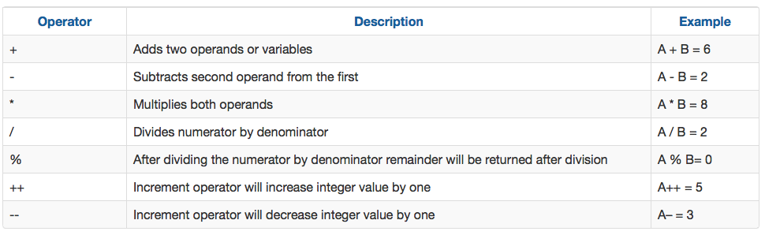
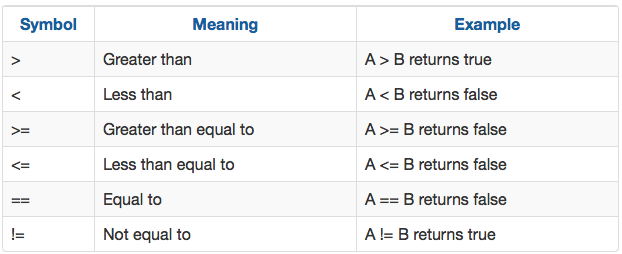
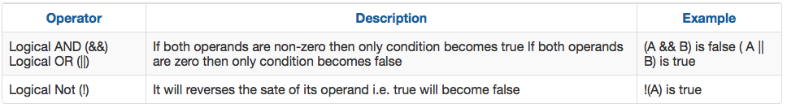
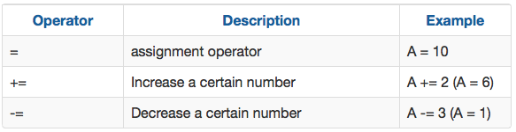

You will learn:
What it is a token and different kinds of tokens in C/C++:
- Identifiers.
- Keywords.
- Constants.
- Types.
- Operators.
Rules to name different variables in a programme.
Casting between types.
Arturo Narros Gonzalez
You will learn:
What it is a token and different kinds of tokens in C/C++:
Rules to name different variables in a programme.
Casting between types.

Any name element is an identifier. They are basically names given by the programmer. It is any variable, function, data definition, etc.
Exercise:

Try to answer next questions:
List of keywords:

List of special characters

They can not be used as identifiers (named variables, functions, etc. )
Identify the keywords and special characters, using the previous list, in identifiers.cpp program
You use them to define variables of type:
Integer properties

Floating point: you can represent real numbers.
Range of validity of each type

You can transform variables of certain types in other variables with different types. The process is as follows:
int intvar = (int) floatvar where floatvar is a "float" type.
EXERCISE:

Answer this questions:
Let's consider that A = 4 and B = 2:




EXERCISE 2: